Sergio Achivare Balderrama
Data Engineer y Responsable Nacional de Business Intelligence
Diseño la infraestructura de datos, los tableros y la IA que convierten la operación de una empresa en decisiones y en ahorro.
Desliza, usa las flechas o abre el índice
Ocho años conectando infraestructura, datos y negocio
Mi objetivo es liderar a las empresas en su transformación digital: poner la infraestructura al servicio de los datos para impulsar la innovación y un crecimiento sostenible.
Vengo de la domótica, las redes y telecomunicaciones, la seguridad de la información, la auditoría de sistemas y la administración de servidores y Azure. Hoy trabajo en business intelligence, arquitectura de datos, análisis avanzado y desarrollo móvil, y lidero equipos de desarrollo.
- años de experiencia
- 8
- rubros con proyectos de BI
- 12
- empresas
- 7
- usuarios con una sola licencia de Power BI
- +1000
Dónde he trabajado
- Corp. BPO Center
- Metatel
- Hola
- Banco Fassil
- Editorial Bienaventuranzas
- Texcam S.R.L.
- Panabol
Cinco frentes que funcionan como una sola arquitectura
Del servidor al tablero y del tablero a la IA. Cada herramienta de esta lista la he llevado a producción.
-
Datos y BI
- Power BI Service
- Power BI Report Server
- Tableau
- SQL Server
- SSIS
- Visual Studio (ETL)
- Microsoft Fabric
- PostgreSQL
SQL, DAX, Python y Power Query
Ver tableros -
Cloud e infraestructura
- Azure
- Active Directory
- Azure AD
- SharePoint
- Google Drive
- Dominios web
-
Seguridad y auditoría
- Gestión de identidades (IAM)
- Auditoría de sistemas
- Gestión de accesos
- Exchange Online
- PowerShell
-
Desarrollo y automatización
- Node.js agéntico
- AppSheet
- Apps Script
- Meta for Developers
- VS Code con MCP
-
Inteligencia artificial
- LLM locales
- APIs de IA en la nube
- RAG y embeddings
- Automatización con agentes
Una solución de BI que se adapta a cualquier empresa
Los datos salen de los sistemas de la empresa, se integran y se modelan, y llegan a cada persona por un portal propio, con la seguridad del directorio corporativo.
Sistemas fuente
SAP, Smart PDV, Involves, bases de datos y archivos
Infraestructura y seguridad
Active Directory, Azure AD, SharePoint y dominios web
Integración y modelo
SSIS y Visual Studio sobre SQL Server
Publicación
Power BI Service, Report Server local y Tableau
Portal BI tokenizado
Tableros integrales para usuarios ilimitados, sin pagar más licencias
Cliente interno
Colaboradores
Cliente externo
Clientes y socios
Una licencia. Más de mil usuarios.
Desarrollo portales de BI con licencias Power BI tokenizadas en Azure. Asigno usuarios y tableros de forma segura y escalable, sin pagar licencias incrementales: el ahorro empieza en el primer despliegue.
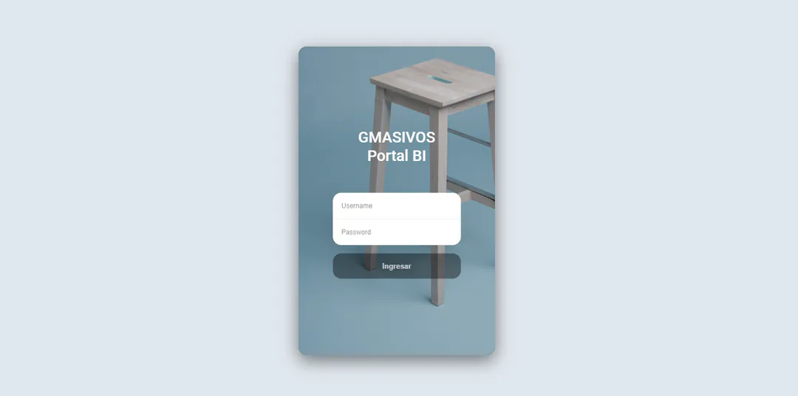
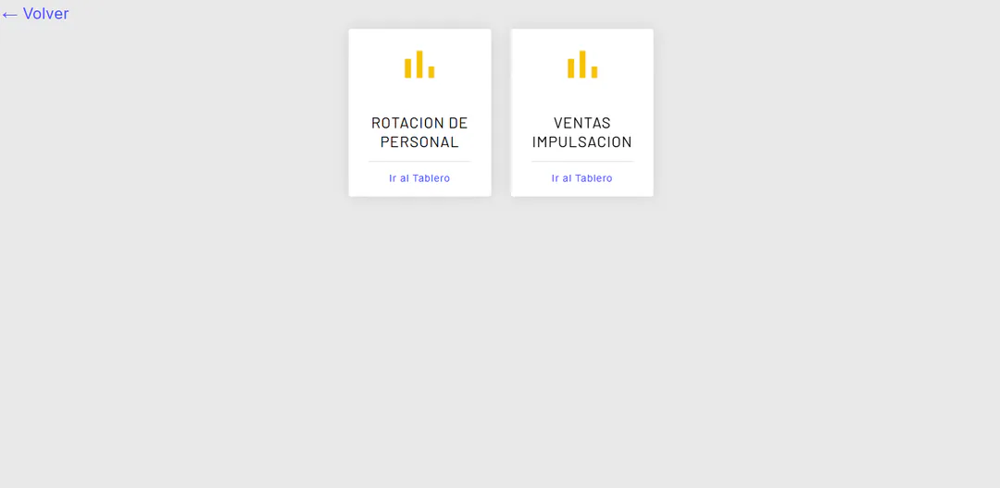
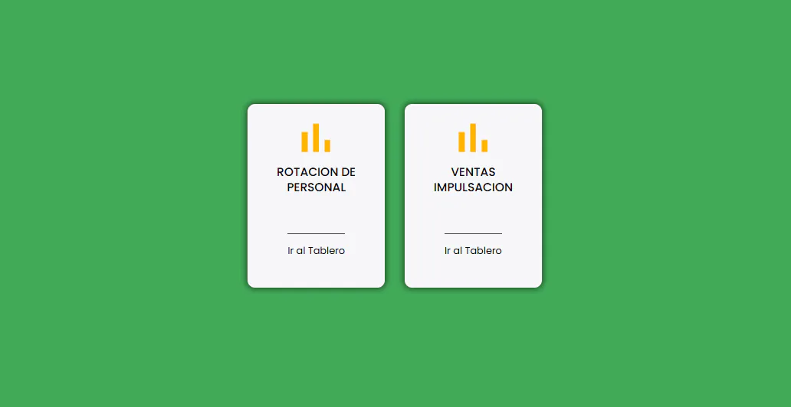
El mismo portal, con la marca de cada cliente:


Tableros para doce rubros
He realizado proyectos e implementaciones de BI en sectores muy distintos. Los marcados tienen casos reales en este portafolio.
- Banca
- Comercial
- Marketing
- Autopartes
- Editoriales
- Consumo masivo
- Transporte y logística
- Recursos humanos
- Censos
- Estudios de salarios
- Ciberseguridad
- Auditoría de sistemas
Lo que tienen en común mis tableros
- Se entienden a la primera. Diseño intuitivo y visualizaciones elegidas con estrategia.
- Hechos para quien los mira. Interactivos y personalizados para cada usuario.
- Siempre al día. Actualización automática y en tiempo real, en cualquier dispositivo.
- Una sola versión de los datos. Integran varias fuentes para un análisis profundo que respalda decisiones estratégicas.
También los construyo de forma agéntica, con MCP desde Visual Studio Code.
Banca: BCP y Yape
Aquí el BI deja de ser solo un tablero y se vuelve una herramienta de trabajo, integrada con otros sistemas.
- Envío de datos a elección por WhatsApp
- Supervisión y monitoreo de personal en ruta
- Reportes a requerimiento
- Notificación supervisada de cambios de ruta
Bot de supervisión por WhatsApp
- El registro 10309 fue observado: la foto del negocio está repetida. Corrígelo desde la app.
- Tu supervisor aprobó el cambio de ruta: hoy visitas la zona norte.
- Quiero el reporte de afiliaciones de hoy.
- Listo: 14 afiliaciones y 2 observadas. Te envío el detalle.
Ejemplo con datos ficticios


Consumo masivo
Ventas, impulsación y ejecución en el punto de venta, ciudad por ciudad.

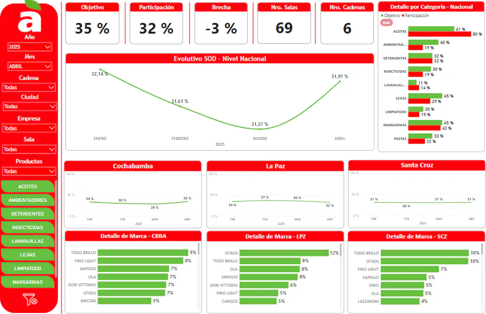

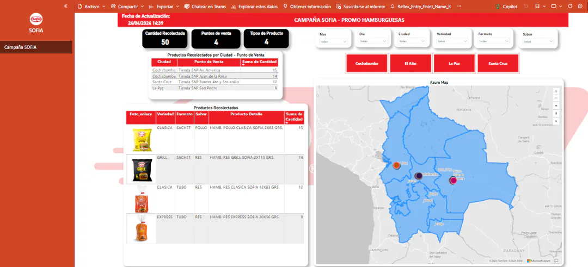

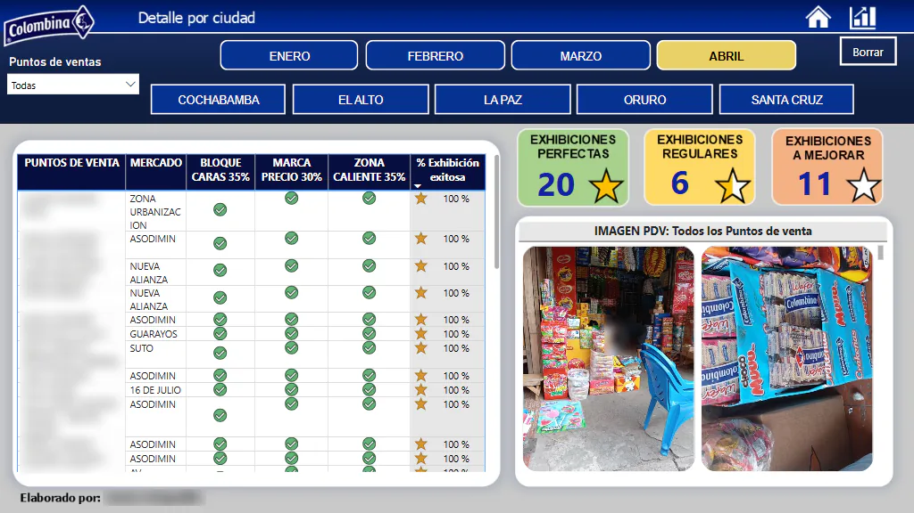

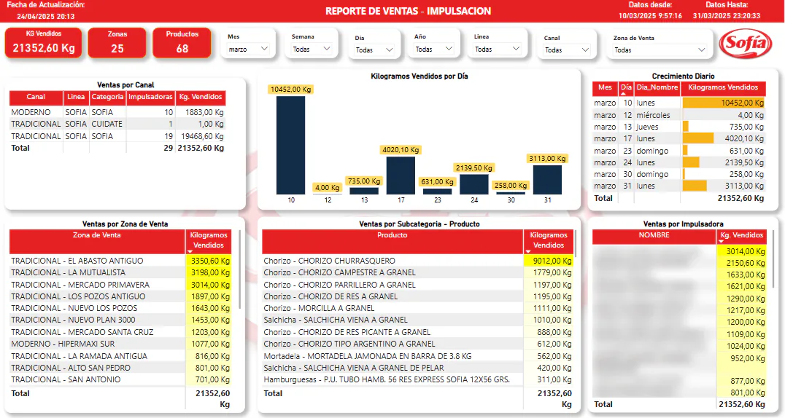
Marketing digital con datos de Meta
Conecto los tableros a las APIs de Meta for Developers para medir audiencia, contenido e inversión en Facebook, Instagram y WhatsApp, además de TikTok.


Recursos humanos
Todo el ciclo del personal de una cadena de tiendas en una sola vista.
- Personal activo y retirado, por cargo
- Contratos por vencer y tipo de contrato
- Meses con más altas y más bajas
- Edad, sexo, departamento y próximos cumpleaños
Los nombres de las personas están difuminados para proteger su privacidad. También desarrollo tableros de estudios de salarios y censos.

Auditoría de sistemas y ciberseguridad
Tableros que auditan la infraestructura en vivo: quién entra, con qué permisos y desde qué equipo.
Análisis del Active Directory en vivo: gestión de usuarios y computadoras.

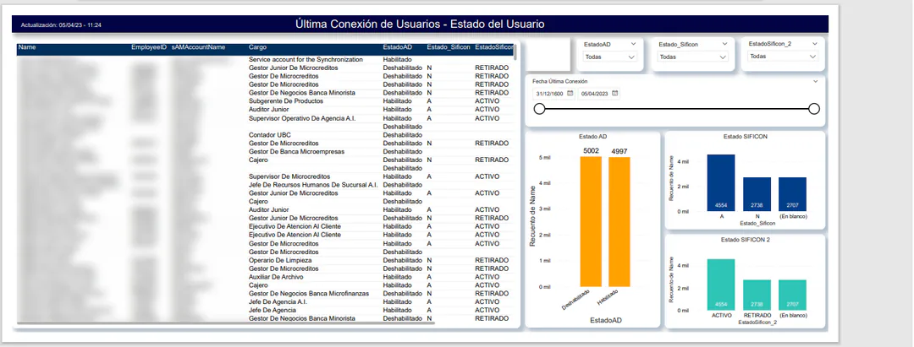
Monitoreo de la asignación de categorías de buzones en Exchange Online.

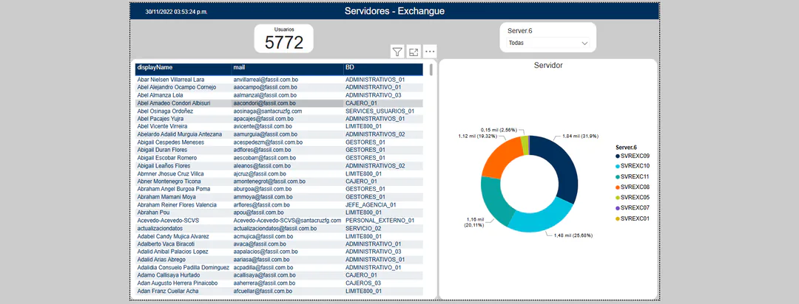
Auditoría automatizada de la gestión de accesos por cargo y perfil.

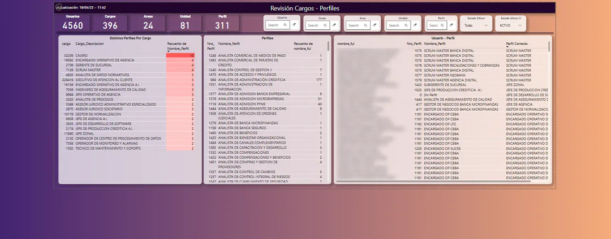
Control de usuarios administradores del dominio y administradores locales.

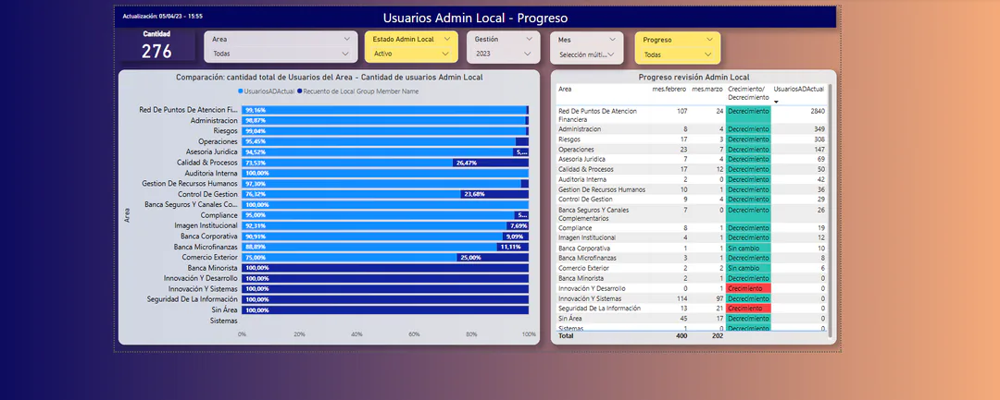
Ingeniería de datos en Microsoft Fabric y Azure
Procesos ETL de punta a punta sobre el dominio de Fabric y servicios de Azure.
- Notebooks
- PySpark
- Python
- SQL
- App Services
- Pipelines

Apps que alimentan el BI
Desarrollo software ágil para móvil y web, y bots con API oficial. Gestiono servidores, bases de datos, seguridad, soporte y la publicación en Play Store. Todo se integra con la infraestructura de BI.
Registro de asistencia con foto y GPS, y su panel de control.


Inicia el caso de un accidente laboral y gestiona su documentación.


Alta de nuevos comercios para una entidad financiera y generación de su QR de cobro.


Sistemas web de punta a punta
Base de datos, backend, frontend y despliegue, a cargo de una sola persona.
Registro de pautas publicitarias de televisión, radio y otros medios.

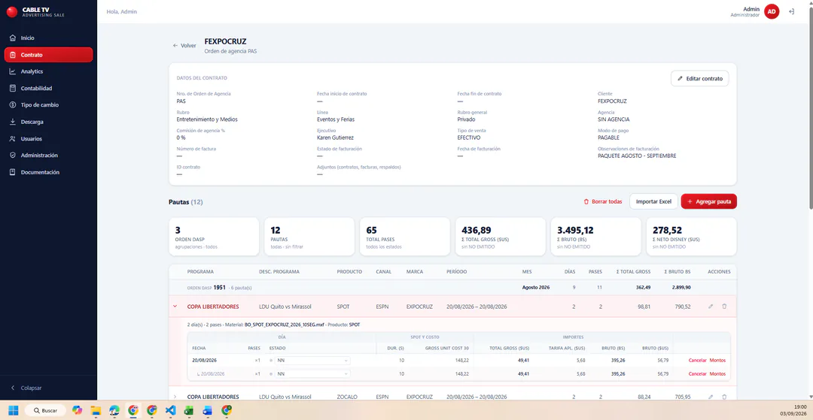
Control de ventas y salidas al aire en televisión, con su modelo de datos documentado.

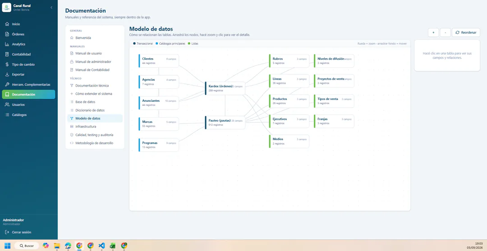
IA integrada, en la nube o en tus servidores
Integro IA por API en la nube o despliego servidores LLM locales y seguros, que multiplican su uso y reducen el costo de procesamiento en soluciones de datos y automatización.
- En la nube
- Claude, OpenAI, Gemini y Mistral AI
- En tus servidores
- Llama 3, Phi-3, Mistral y Code Llama
- Capacidades
- RAG con bases vectoriales, memoria contextual, embeddings y ajuste fino
- Despliegue
- Node.js, Docker, Kubernetes, Nginx y Ubuntu

Conversemos sobre tus datos
Transformo ideas en sistemas inteligentes y escalables: desde la ingeniería de datos hasta la inteligencia artificial en producción.
Gracias por tu visita.